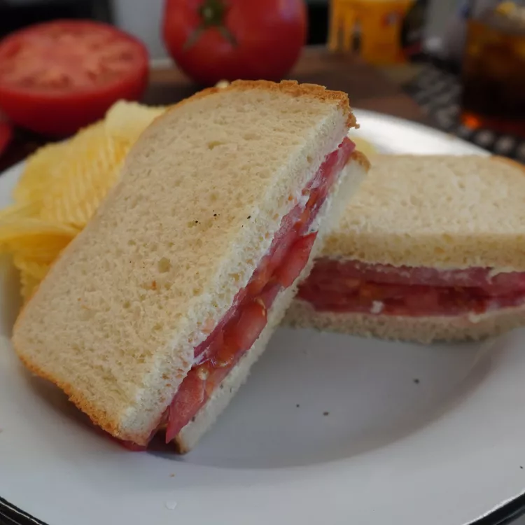

Southern Tomato Sandwhich

How To Make A Southern Tomato Sandwich
Tastes like summer! Room temperature tomatoes are key here and once the salt and pepper hit them, the juices start flowing. When the juicy tomatoes blend in with the mayonnaise, it makes a delicious, creamy, slightly tangy, and flavorful sauce. The bread becomes slightly soggy, in the best way possible. The last bite is even better than the first!
Ingredients
- Mayonnaise
- Bread
- Tomato
- Salt
- Pepper
Steps
- Spread 1 to 2 tablespoons mayonnaise (depending on taste) evenly over both slices of bread.
- Place two slices of tomato on one slice of bread and sprinkle with half of the salt and pepper.
- Add two more slices of tomato and sprinkle with remaining salt and pepper
- Place second slice of bread, mayonnaise side down, on the top.
- Slice and Enjoy!